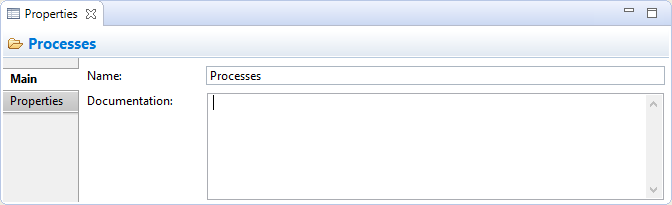

Propriétés des répertoires
Sélectionner un répertoire créé par un utilisateur dans l'arborescence des modèles signifie que vous pouvez modifier ou consulter les propriétés suivantes dans la fenêtre des propriétés.
L'onglet principal

Modifier les propriétés "Principales" d'un répertoire
| Nom: |
Le nom du répertoire - ceci ne peut être modifié que pour les sous-répertoires créés par un utilisateur. |
| Documentation: |
Un endroit où saisir de la documentation utilisateur concernant le répertoire |
 Dans le champ texte "Documentation", les URLs qui commencent par "http://" "https://" ou "ftp://" seront affichée sous forme d'hyperlien. En appuyant sur la touche Ctrl / Commande, le curseur prendra la forme d'une main et vous pourrez ouvrir le lien dans un navigateur.
Dans le champ texte "Documentation", les URLs qui commencent par "http://" "https://" ou "ftp://" seront affichée sous forme d'hyperlien. En appuyant sur la touche Ctrl / Commande, le curseur prendra la forme d'une main et vous pourrez ouvrir le lien dans un navigateur.
L'onglet propriétés
Pour plus d'informations concernant la création et la gestion des propriétés utilisateur, voir Propriétés utilisateur.